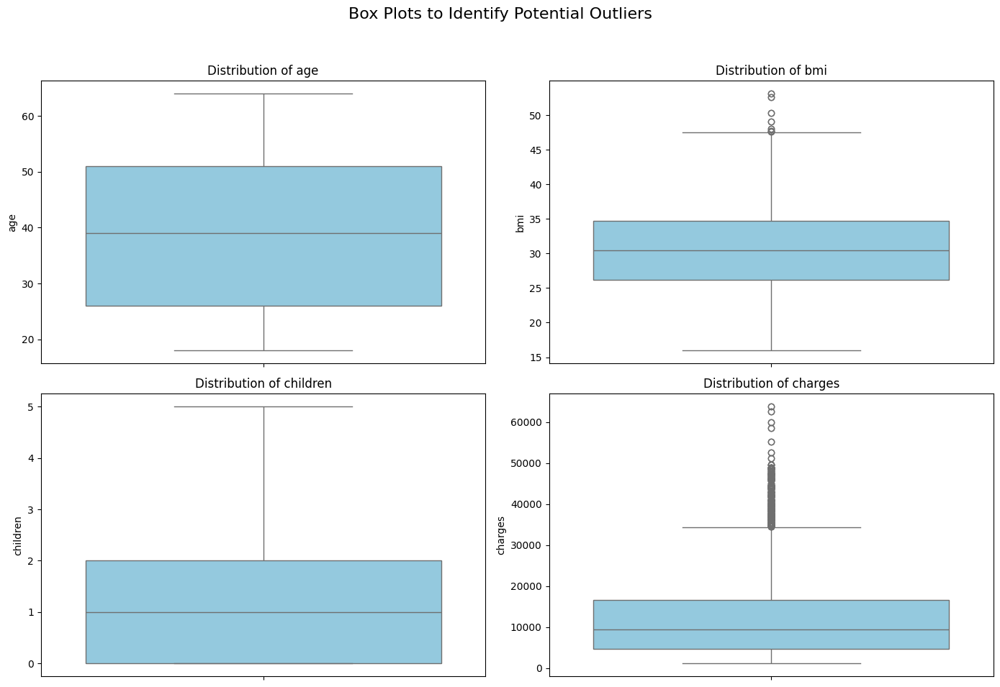
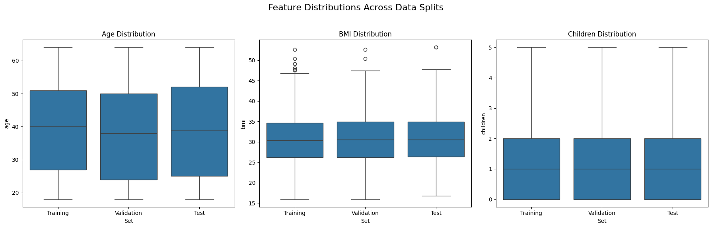

This report details the analysis performed to predict medical charges based on patient attributes, including the full Python code and resulting data visualizations.
The first step is to check the distribution of our key numerical features to identify the spread of the data and any potential outliers. The plot below shows box plots for 'age', 'bmi', 'children', and 'charges'. We can see several outliers in the 'bmi' and 'charges' columns.
After splitting the data into training, validation, and test sets, we verify that the distributions remain similar across all three. The plot below confirms that 'age', 'bmi', and 'children' have nearly identical distributions in each set, which ensures our model evaluation will be fair and unbiased.
An R² score of 0.8144 is a strong result. It means our model can explain about 81.4% of the variation in medical insurance charges using the provided features. This indicates a good fit for the test data.
The following complete Python script was extracted from the `Untitled7.ipynb` notebook.
import pandas as pd
import numpy as np
import matplotlib.pyplot as plt
import seaborn as sns
from sklearn.model_selection import train_test_split
from sklearn.linear_model import LinearRegression
from sklearn.preprocessing import OneHotEncoder
from sklearn.compose import ColumnTransformer
from sklearn.pipeline import Pipeline
from sklearn.metrics import r2_score
import io
# Define the filename. This must exactly match the name of the file you uploaded.
filename = 'Medical_insurance.csv'
# Use pandas to read the CSV file into a DataFrame called 'df'
df = pd.read_csv(filename)
df.head()
# Select the columns you want to plot
columns_to_plot = ['age', 'bmi', 'children', 'charges']
# Set up the matplotlib figure with a 2x2 grid for our plots
fig, axes = plt.subplots(2, 2, figsize=(14, 10))
fig.suptitle('Box Plots to Identify Potential Outliers', fontsize=16)
# Create a box plot for each of the selected columns
# We use axes.flatten() to easily iterate through the subplots
axes = axes.flatten()
for i, column in enumerate(columns_to_plot):
sns.boxplot(y=df[column], ax=axes[i], color='skyblue')
axes[i].set_title(f'Distribution of {column}')
axes[i].set_ylabel(column)
# Adjust layout to prevent titles and labels from overlapping
plt.tight_layout(rect=[0, 0.03, 1, 0.95])
# Save the figure and show the plot
plt.savefig('outlier_boxplots.png')
plt.show()
# --- 1. Define Features (X) and Target (y) ---
X = df.drop('charges', axis=1)
y = df['charges']
# --- 2. Split the data into train (70%), validation (15%), and test (15%) sets ---
X_train, X_temp, y_train, y_temp = train_test_split(X, y, train_size=0.7, random_state=42)
X_val, X_test, y_val, y_test = train_test_split(X_temp, y_temp, test_size=0.5, random_state=42)
# --- 3. Prepare data for plotting ---
# We create a combined DataFrame with the features and a 'Set' column for easy plotting.
X_train['Set'] = 'Training'
X_val['Set'] = 'Validation'
X_test['Set'] = 'Test'
plot_df = pd.concat([X_train, X_val, X_test])
# --- 4. Create the Box Plots for age, bmi, and children ---
fig, axes = plt.subplots(1, 3, figsize=(18, 6))
fig.suptitle('Feature Distributions Across Data Splits', fontsize=16)
# Plot for 'age'
sns.boxplot(x='Set', y='age', data=plot_df, ax=axes[0], order=['Training', 'Validation', 'Test'])
axes[0].set_title('Age Distribution')
# Plot for 'bmi'
sns.boxplot(x='Set', y='bmi', data=plot_df, ax=axes[1], order=['Training', 'Validation', 'Test'])
axes[1].set_title('BMI Distribution')
# Plot for 'children'
sns.boxplot(x='Set', y='children', data=plot_df, ax=axes[2], order=['Training', 'Validation', 'Test'])
axes[2].set_title('Children Distribution')
# Save the figure and show the plot
plt.tight_layout(rect=[0, 0.03, 1, 0.95])
plt.savefig('feature_split_boxplots.png')
plt.show()